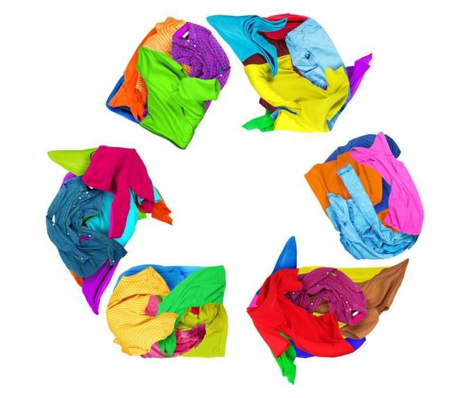

Moda circular: ¿Cómo funciona ese negocio en Argentina?
La reventa de ropa crece más rápido que el mercado textil y ya llegó a los shoppings. Cómo funciona la moda circular en Argentina y qué datos faltan.
La reventa de ropa crece más rápido que el mercado textil tradicional y ya tiene local en un shopping. Sin embargo, todavía no existen estudios oficiales que midan cuánto pesa en la economía argentina.
La ropa de segunda mano dejó de ser un nicho en Argentina. A mediados de septiembre de 2026, Galpón de Ropa inauguró su primer local dentro de un centro comercial, en el DOT Baires Shopping, con 112 metros cuadrados. Con ese paso, la moda circular llegó a un circuito de consumo masivo que hasta ahora le era ajeno.
Qué es la moda circular y por qué importa en la economía
La moda circular propone alargar la vida útil de las prendas a través de la compra y venta de ropa usada, el reciclaje o la reutilización de textiles. Se opone al esquema de producir, consumir y tirar. Desde una mirada económica, abre un mercado donde el consumidor ahorra y quien vende monetiza lo que ya no usa.
Según una columna publicada en Perfil, el crecimiento de la segunda mano responde al rechazo al fast fashion, a la necesidad de ahorrar y al deseo de reducir el impacto ambiental. En Argentina se suma un factor económico propio: la búsqueda de precios accesibles en un contexto de consumo bajo.
Los números de la reventa de ropa
Según la información difundida por iProfesional, el segmento de reventa crece a tasas superiores al 10% anual, frente al 4% del mercado textil tradicional. La propia dirección de Galpón de Ropa proyecta que la segunda mano alcanzará cerca del 23% del mercado global de indumentaria en 2030. Son cifras globales y de una empresa del sector, por lo que conviene tomarlas como referencia.
El caso de Galpón de Ropa permite ver la escala local. La compañía tiene 11 puntos de venta en Buenos Aires, una plataforma de comercio electrónico con alcance nacional y procesa unas 40.000 prendas por mes. Obtuvo la certificación de Empresa B en 2023, emplea a más de 100 personas de forma directa y, según informó, crece sin financiamiento externo.
Quién compra y cuánto se ahorra
El atractivo para el consumidor es el precio. iProfesional ejemplificó que un blazer de una marca premium, que en un shopping puede superar los $200.000, puede conseguirse en una tienda de segunda mano por menos de la mitad. Esa diferencia explica por qué el formato crece en un momento en que muchos hogares ajustan gastos.
El mercado también se segmentó. Juan Perez, fundada en 1998, es considerada una de las pioneras. Boycapel, en Recoleta, y Vestidor Ideal apuntan a la reventa de lujo, mientras que EcoModa combina locales físicos en el AMBA con una plataforma digital. Es decir, hay opciones para distintos bolsillos y estilos.
Un modelo que además genera empleo y capacitación
La moda circular también se vincula con la economía social. Galpón de Ropa tiene un programa de donaciones y un proyecto educativo llamado “Puntada Inicial”, que dicta capacitaciones sobre circularidad en universidades y entrega textiles en desuso a estudiantes de diseño para proyectos de suprarreciclaje.
Lo que todavía falta medir
La principal limitación es la falta de datos. La columna de Perfil señala que todavía no hay estudios oficiales que midan el aporte de este rubro al PBI ni cuántos empleos genera, aunque consultoras internacionales como 6W Research lo identifican como un sector en crecimiento. Por eso, no es posible afirmar cuánto del consumo total de ropa en el país corresponde hoy a la segunda mano.
Entonces, ¿qué tan instalada está la moda circular? Está consolidada en el consumo urbano del AMBA, con tiendas propias, ferias y plataformas digitales, y ahora también en los shoppings. Lo que no tiene todavía es una medición oficial que permita dimensionar su peso real. Será clave ver si su avance continúa cuando los precios de la ropa nueva suben menos que la inflación.